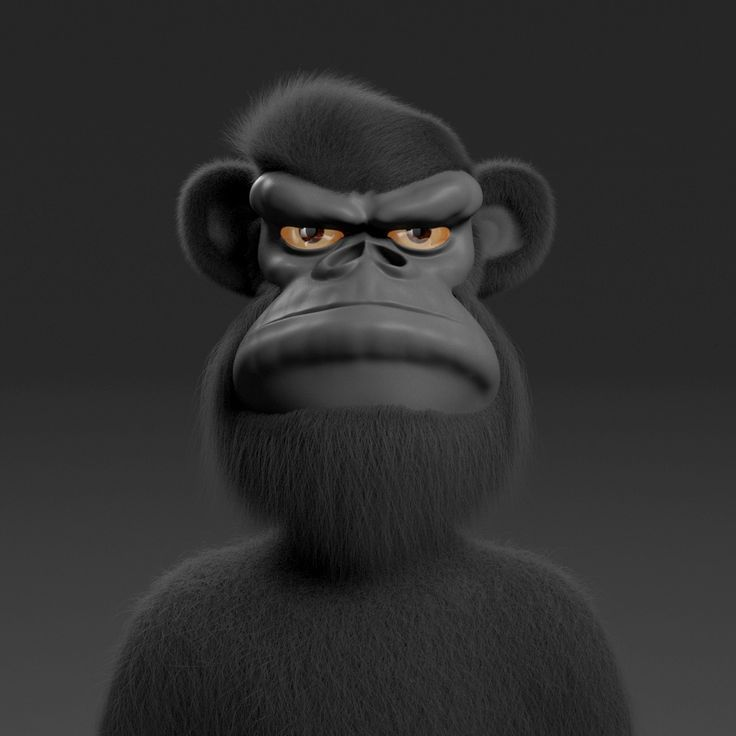

Arsène Caron
62 bis rue Gay Lussac
06.32.21.08.10
Permis B

Formation
2015 - 2018
2018 - 2021
2021 - 2023
Baccalauréat,
Licence en Informatique,
Master en Développement Web
Expériences professionnelles
2020
2021
Tech Solutions
Web Innovations
Langues & compétences informatiques
Anglais,
Espagnol
HTML, CSS, JavaScript, PHP
Retour à l'accueil